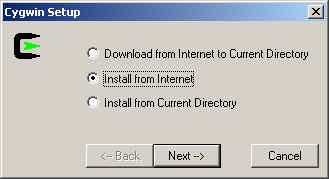
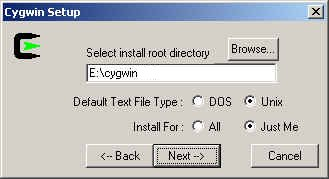
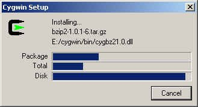

brickOS 0.2.6.08 - Instructions for installing on Win9x/NT/2000/XP
Paolo Masetti
Version 1.2, 19 September, 2002Copyright © 2001 Paolo Masetti.
| Revision History | ||
|---|---|---|
| Revision 1.2 | 19 Sep 2002 | Revised by: smm |
| Update for brickOS 0.2.6.08, formerly legOS | ||
| Revision 1.1 | 19 Apr 2002 | Revised by: smm |
| Update for legOS 0.2.6 | ||
| Revision 1.0 | 13 May 2001 | Revised by: pm |
| Initial Release after legOS 0.2.5 | ||
This document is an adaptation of the original version written by Peter Van der Beken . Many thanks to Luis Villa for his HOW-TO for Linux and his effort in documenting brickOS.
If you have problems related to these instruction, you can write to Paolo Masetti .
 | These instruction work for me (I'm using NT Win2k Pro SP1). I can't be sure they'll do for you but I'm quite sure. They should get brickOS working on your own PC, but they should be used at your own risk as with any other program installation, you may crash your computer, lose files, and generally make a mess of things. So, neither he nor I am responsible for what happens. :-) |
These instructions give you a fully functional brickOS 0.2.6.08 (probably a newer version too). You will be able to recompile the entire kernel image, the tools (dll, firmdl3 & so on). You will have to download a lot of MB. If you do not like that, please use WinlegOS that is a good porting of the minimal requirement to compile and upload .lx files with Windows.
Step by step instructions:
1. Install Cygwin
Install Cygwin 1.3.x or newer version (1.3.10 as of this writing) from Cygwin Site: http://www.cygwin.com/ .
You can install it on-line running the setup program directly from this url: Install Cygwin now . Save the file in a temporary directory and run it.
You can download all the files for a later install, or install directly from Internet. Choice the best for you:

Install in the directory that you prefer. Do not worry about it, this version of cygwin will mount directories as *nix later. I use these choices:

Last setup I've tried let you choose which modules you need to download and setup. Here is a minimal list (but probably some modules could be removed too) that was tested and works:
ash autoconf automake bash binutils cpio cygwin diff file fileutils findutils flex gcc grep less login make mingw patch sed shellutils tar textutils time w32api

2. Build the Hitachi-H8 cross-compiler
Open a cygwin bash shell window (you can open it using Start->Programs->Cygnus Solution->Cygwin Bash Shell)
Make a new directory:
where you will download the next files: c:\cygwin\build$ mkdir /build
Download gcc 2.95.2 sources using this link -> gcc-2.95.2.tar.gz and save in c:\cygwin\build
Download binutils 2.10.1 sources using this link -> binutils-2.10.1.tar.gz and save in c:\cygwin\build
Download the building scripts from here (legos-buildgcc.zip) and put it in the same directory as above. Unzip them to produce a shell script (buildgcc.sh) and two diff files.
Build the cross compiler:
$ cd /build $ ./buildgcc.sh
Ignore the warnings in compile process. It should work.
3. Install the brickOS files
Get brickos-0.2.6.08.tar.gz from the "Latest Test Releases" section of our project web: http://sourceforge.net/projects/brickos . Drag a copy to C:\cygwin.
Type:
$ cd / $ tar xvfz legos-0.2.6.08.tar.gz
Lots of files will stream by as they install into their directories. This will create a legos-0.2.6.08 directory.
4. TRY IT!!!
Type:
$ cd /legos-0.2.6.08 $ make realclean $ make depend $ make $ cd util $ make strip
Now, Power on RCX.
Put IR tower on COM1
Press RUN on RCX and enjoy!$ ./firmdl3 ../boot/legos.srec $ ./dll ../demo/helloworld.lx
If you have the IR tower connected to a different com port you can change the default with the instruction: "export RCXTTY=COMx". NOTE: if you have a USB tower this is "export RCXTTY=USB"
Final Notes
If it doesn't work, consult lugnet.robotics.rcx.legos on lugnet.com .
Every command indicated is executed from the Cygwin environment. In the examples, the "$" is the prompt cygwin gives to you.
You can use Notetab Light to edit files instead of WordPad or VI. It's available from: http://www.notetab.com . It preserves the unix line-endings, and it can change between unix and dos line-endings.
Latest update: Stephen Moraco 19/09/2002.
Update/generate/post as web content Stephen Moraco 01/05/2002.
Initial Release: Paolo Masetti 13/05/2001.
SGML Source for document created for Paolo by Stephen Moraco 19/07/2001.